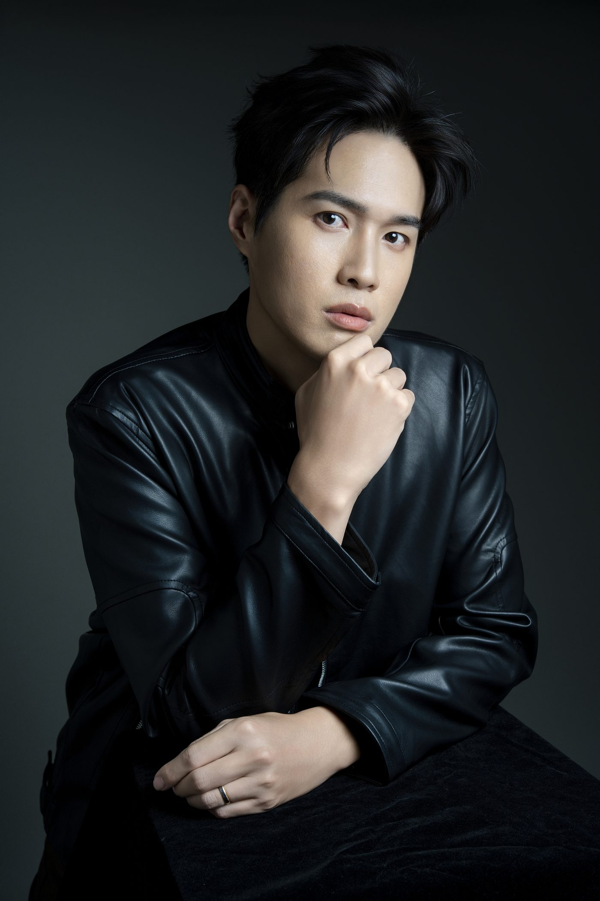

這是一個牙醫師形象照重新規劃的實際案例。當他的工作從診間延伸到教學、講座與品牌合作，原本只服務診所官網與掛號頁的正面人物照，也開始需要更多不同用途的版本。
他原本對外最常使用的，就是那張正面半身照。用在診所官網與掛號頁，處理人物辨識與醫療身分已經足夠。
後來，他的工作開始延伸到院內教學、廠商的產品分享與同業社群的講座。人物照片也跟著進入更多公開場合：看到照片的不再只是要來看診的病人，還有邀他講課的承辦人、想找他合作的品牌，以及在社群上第一次看到他的同業。
他原本卡在哪裡
他原本的照片本身沒有問題，限制在於只有一種構圖與正式程度。前期盤點時列出的用途，包含講座主視覺需要的橫幅、能放進提案的情境照，以及社群與專訪需要的、正式度較低而較有生活感的素材。原本那張正面半身照，不適合直接套用到這些不同版位。
當新的版位出現，而手上仍只有原本的單一版本時，就只能從既有照片裡找一張勉強適用的。
這一案先確認角色與使用情境
這一案走的是完整的商業視覺整合企劃，前置期約兩個月，先確認目前角色、接下來會出現的公開場合與影像用途，再進入服裝與拍攝安排。
他沒有打算弱化醫師身分，同時也希望公開影像能呈現較有個人風格、願意站到台前分享的一面。專業能力與實際觀點，仍由他的內容、講座與工作成果支撐。因此這次企劃同時保留醫療身分與較個人化的影像版本。
衣服是在拍攝之前就決定的
定位確認之後才進服裝。這個階段處理的是服裝策略與選品提案、款式確認、報價與訂購，等到貨之後再做尺寸確認與拍攝前定裝。
四套服裝都在前置企劃期間完成選品、訂購與試穿，拍攝前已確認各自的使用場合。
髮型的方向會在拍攝前先跟設計師溝通，實際的剪染由本人安排；拍攝當天的妝髮由 B.room 完成。
四套服裝，各有用途
這一案安排了四套服裝，分別對應不同的使用場合。最上面那張的駝色西裝就是其中一套。

白袍。它能快速傳遞醫療場域與職業身分；至於具體是哪一位、專長與職稱，仍要由姓名與頁面文字補充。在這一案裡，白袍保留為其中一個版本，不作為唯一的公開人物影像。
駝色西裝。這一套是為台前的場合準備的：講座主視覺、媒體版位、活動手冊。它讓人物的正式程度和使用情境對得上。
黑色皮衣。相較駝色西裝，黑色皮衣降低了一些正式度，也讓個人風格更明顯，主要預留給社群主視覺與專訪等版位。

白襯衫與丹寧。這一套降低了畫面的正式程度，作為社群、專訪與較有生活感的人物素材。

這跟〈拍完形象照之後〉談的是同一件事：規劃一次拍攝時，比套數更值得先確認的是接下來會使用哪些版位，服裝與構圖再依這些用途安排。
照片後來去了哪裡
照片拍完只是中途。交付之後實際有沒有被用進工作場合，是評估這次拍攝好不好用的重要一部分。所以完整企劃的後段不是交檔案就結束：精修影像交件時會一起確認結果，並附上影像應用指南與影像部署模擬器，讓你知道哪一張適合放哪個版位；確認完成之後還有 90 日的應用支援，選圖或版位使用有疑問可以直接問。
【待補：他實際的部署位置。要問到具體的地方，例如診所官網、講座主視覺、活動手冊、社群主頁、媒體採訪、廠商提案。能拿到「哪一張用在哪裡」的對照最好，至少要三到四個真實位置，不要寫成通用清單。】
【待補：客戶原話。這一句必須是本人講的，不代寫。建議問法：「拍完之後，有沒有哪個場合你感覺到差別？」拿到什麼寫什麼，不修飾。】
如果你也在同一個位置
如果工作開始延伸到原本的場域之外，可以先整理兩件事：照片接下來會用在哪些公開場合，以及主要會由哪些人看到。
這兩件事想清楚之後，有些人會發現自己其實只缺一個特定版位，單次拍攝就足夠，不必為此做整套規劃。如果同時有多種公開版位，而且需要不同的正式程度與構圖，就比較接近商業視覺整合企劃要處理的範圍。
工作角色改變之後，現有的照片不一定會同步更新。確定接下來有新的使用需求時，可以先檢查手上的版本是否還合用，再決定要補拍單一版位，或是重新規劃一次。